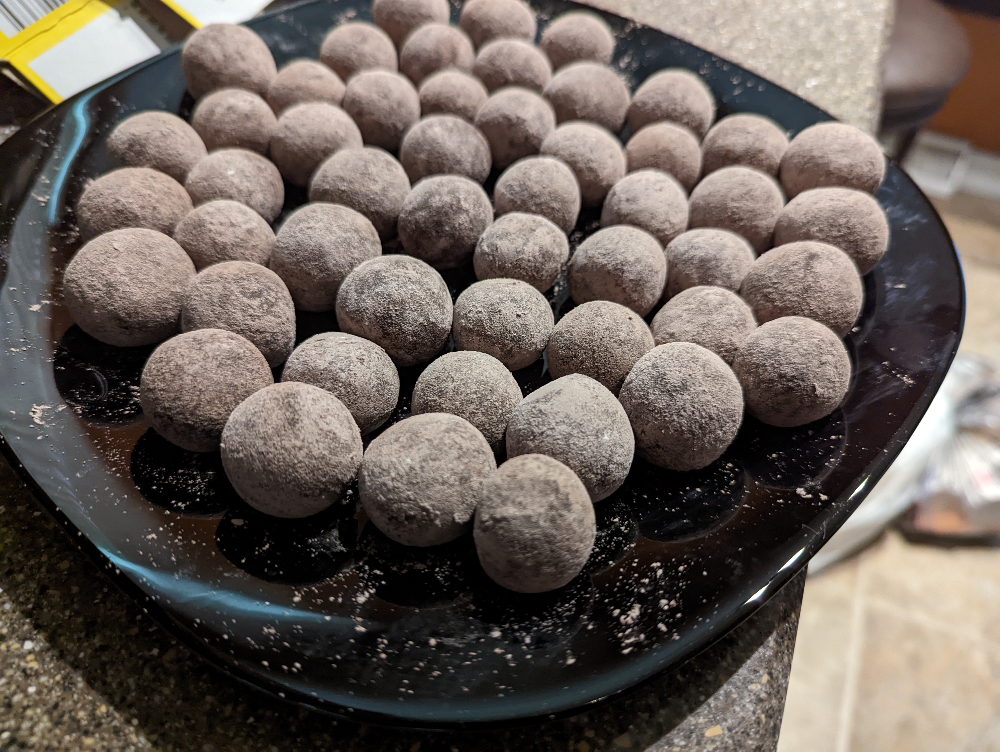

Destin's Drops

Description
This recipe is a real crowd pleaser! And they're no-bake!
Ingredients
- 2 Boxes of Vanilla Wafers (11oz/Ea)
- 1 Can of Sweetened Condensed Milk (14oz)
- 4oz of Lemon Juice (2-3 lemons worth, depending on size)
- About 2 tsp of Lemon Zest (2-3 lemons worth, I don't measure)
- 1/4 Cup of Powdered (Confectioner's) Sugar in a small bowl (For the outside)
Steps
- Completely pulverize the Vanilla Wafers in a food processor until noce and dusty
- Put about half of the Vanilla Wfer dust in a large mixing bowl and add the Sweetened Condensed Milk, combine it with a spatula until it's a bit lumpy
- Add the Lemon Zest and the Lemon Juice, combine with spatula
- Add the remainder of the Vanilla Wafer dust slowly as you combine with the spatula
- It should be very dense once everything is added. Start to fold the "dough" and kneed it with your hands (for a few minutes at least) until it has a very even consistency, kind of like playdough, but maybe aa bit sticky
- If the "dough" seems exceptionally wet, let it sit for five or so minutes to dry out
- Put some wax paper down (or paper plates) and start breaking off chunks of dough and rolling them between your palms to make balls, You can make whatever size you like, from pea size to golf ball size, I tend to go for grape size
- Once you have rolled all of the doough into balls you can start rolling each of them in the Powdered Sugar bowl and sitting them on fresh wax paper or paper plates
- Refrigerate or freeze
Back to Homepage